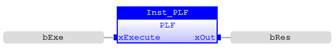
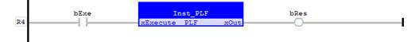

Function Block
Outputs a pulse at the falling edge of the input ‘xExecute’.
|
Name |
Type |
Description |
|
xExecute |
BOOL |
Its falling edge will output a cycle pulse on ‘xOut’. |
|
Name |
Type |
Description |
|
xOut |
BOOL |
Output a pulse if ‘xExecute’ falling edge detected. |
The output pulse will stay until next call.
Output a pulse with the instance of PLF ‘Inst_PLF’ to output a pulse:
bExe := TRUE;
Inst_PLF(bExe);
bRes := Inst_PLF.xOut;
bExe := FALSE;
Inst_PLF(bExe);
bRes := Inst_PLF.xOut; // Output TRUE
Inst_PLF(bExe);
bRes := Inst_PLF.xOut; // Output changes to FALSE

The falling edge of ‘bExe’ will output a pulse on ‘bRes’:
